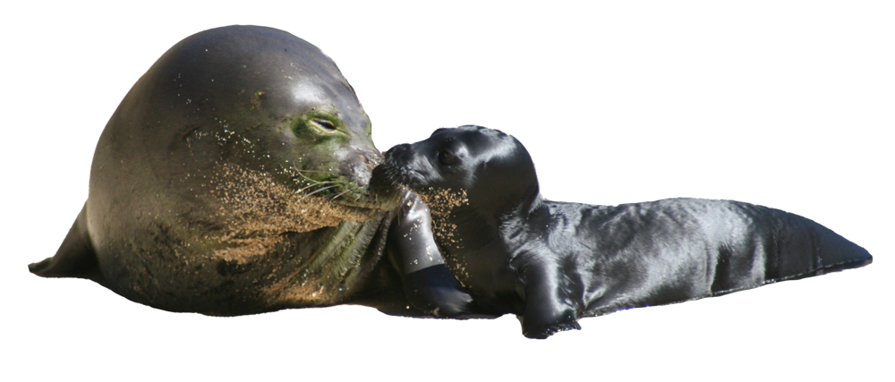

The Hawaiian Monk Seal
The species is critically endangered, with a 2015 census by NOAA estimating a population of around 1,272 seals.
about
The Hawaiian monk seal, found exclusively in the Hawaiian Islands, is under federal and state protection.
Hawaiian monk seals exhibit unique behavioral patterns, spending approximately one-third of their time resting on shore to conserve energy between hunting trips. They feed on a variety of prey including reef fish, octopus and lobster, often diving for 15 to 20 minutes at depths up to 1,650 feet.
Despite their solitary nature, they face predation from large tiger and Galapagos sharks. Females give birth for the first time between five to nine years of age, typically in the spring, with seal pups nursing for 5 to 6 weeks and quadrupling their birth weight before learning to forage independently.
quick facts
-
Common & Hawaiian Name
Hawaiian monk seal, ‘ilio-holo-i-kauaua
-
Habitat
Subtropical waters
-
Animal Type
Marine mammal
-
Diet
Reef fishes and invertebrates
-
Distribution
Hawaiian Islands
-
Size
400-600 pounds (180-270 kg), 7-8 feet (2.1-2.4 m) long
Monk seals sometimes get eels stuck in their noses while foraging, possibly by probing into crevices where eels hide.
resident monk seals
maka onaona
soft or gentle eyes
Maka, brought from French Frigate Shoals in 1984 at three weeks old and 60 pounds, was weaned early and possibly abandoned. He likely wouldn't have survived without special care at the Aquarium. Now an adult, Maka measures about 7 feet (2.2 m) long and weighs between 350 and 390 pounds (159-177 kg).
hoʻailona
a sign from the sea
Hoʻailona, born on Kauaʻi in May 2008, was abandoned by his mother and rescued by NOAA scientists., and began interacting with humans instead of other seals. Due to developing cataracts, he couldn't return to the wild and was relocated to the Waikīkī Aquarium in Fall 2011. Though mostly blind, he adapts well to his pool, swimming swiftly and responding to stimuli.
support
DONATE